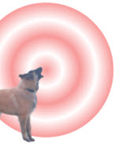
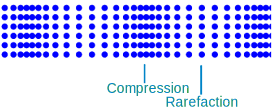
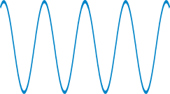
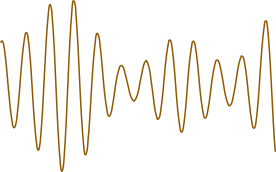
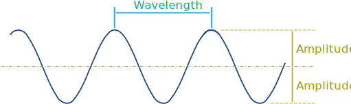
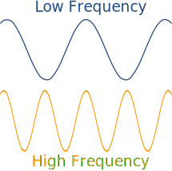

Introduction to Waves
A wave is a disturbance that moves through space or matter.
Examples include water waves, sound and light
The "disturbance" or "variation" can be a change in pressure, electrical intensity or many other things, but there is always a transfer of energy.
And waves vary about some central value due to a "restoring" force, such as a spring, magnetic force, surrounding pressure, etc.
Longitudinal vs Transverse
First, play with this animation:
Notice how the wave moves but the particles just bounce back and forth (longitudinal) or up and down (transverse), but generally do not go anywhere.
Longitudinal Waves: The disturbance is in the same direction as the wave.
Example: A Spring
The wave moves left to right, and the disturbance moves left and right also.
This spring has a longitudinal wave
Example: Sound

Sound waves are longitudinal.
The air goes between compressed and "rarefied":

The air molecules bounce back and forth a bit but don't travel anywhere.
Transverse Waves: The disturbance is at right angles to the wave's direction.
Example: a water wave moves left to right, and the disturbance moves up and down
Water waves are Transverse Waves.
Did you know that lake and ocean waves are mostly caused by wind over the surface?
Transfer Energy not Matter
Waves transfer energy, not matter. The matter might bounce up and down (transverse), or back and forth (longitudinal), but generally does not go anywhere.
Shapes

We often show waves as simple "sine waves"

But they can be a lot more interesting!
In fact waves can add to each other in an effect called superposition:

Here two different sine waves add together to make a new wave.
Try "sin(x)+sin(2x)" at the function grapher.
Mechanical vs Electrical
Mechanical waves travel through matter only.
They can't travel through a vacuum.
Example: Sound Waves
Air molecules collide with each other, after a collision one bounces back and the next bounces forward, and so on.
Thus they don't really travel anywhere, but the energy goes forward.
Electrical waves can travel through a vacuum.
Radio and microwaves, light, and x-rays are all electrical waves.
Wavelength and Amplitude
The Wavelength is the length from one peak to the next (or from any point to the next matching point):

The Amplitude is the height from the center line to the peak (or to the trough). Or we can measure the height from highest to lowest points and divide that by 2.

Frequency
Frequency is how often something happens per unit of time, usually per second.
When frequency is per second it is called "Hertz" (Hz).
Example: 50 Hertz means 50 times per second
Play with Amplitude, Wavelength and Frequency in this animation:
In fact the Wave Speed, Wavelength and Frequency are related:
Wave Speed = Wavelength × Frequency
Frequency = Wave Speed Wavelength
Wavelength = Wave Speed Frequency
Example: What is the wave speed when the wavelength is 20 m and the frequency is 3 Hz?
Wave Speed = Wavelength × Frequency
Wave Speed = 20 m × 3/s
Wave Speed = 60 m/s